ภาพรวมบทนี้ บทแรกของครึ่ง Computer Architecture (W. Suntiamorntut, Ph.D.) ปูพื้นว่า สถาปัตยกรรมคอมพิวเตอร์คืออะไร ต่างจาก organization อย่างไร คอมพิวเตอร์มีกี่ประเภท มีส่วนประกอบอะไร ข้างใน CPU มีอะไร
ต่อด้วยแนวคิดสำคัญที่จะเจอทั้งเทอม: cache, multi-core vs multi-thread, การผลิตชิป, RISC vs CISC, embedded/ARM, parallelism และ Flynn's taxonomy
ปิดท้ายด้วย การวัดประสิทธิภาพ (performance) ซึ่งมีสูตรคำนวณที่ออกสอบบ่อย: CPU time, clock rate, CPI
1. Course Outline
หัวข้อที่เรียนในครึ่งนี้ (บทนี้คือ 2 ข้อแรกที่เน้นสีแดงในสไลด์):
- The structure and architecture of the computer systems ← บทนี้
- Basic components of computers ← บทนี้
- data representations
- the Assembly Language
- memory system organization
- the memory hierarchy; the cache memory
- input and output systems
- storage systems
- computing units
- the multiprocessor architecture
2. Architecture vs Organization ⭐
| Architecture (สถาปัตยกรรมคอมพิวเตอร์) | Organization (โครงสร้างการจัดระบบคอมพิวเตอร์) | |
|---|---|---|
| คำถาม | WHAT — ทำอะไรได้ | HOW — ทำให้เกิดขึ้นจริงอย่างไร |
| นิยาม | คุณลักษณะของระบบที่ โปรแกรมเมอร์มองเห็น และมีผลโดยตรงต่อการทำงานเชิงตรรกะของโปรแกรม | หน่วยปฏิบัติการและการเชื่อมต่อ ที่ทำให้ข้อกำหนดของ architecture เกิดขึ้นจริง |
| ตัวอย่าง | Instruction set, addressing modes, data types | คำสั่งถูกทำให้เกิดขึ้นจริงในระดับวงจรอย่างไร, cache, pipeline, design, bus width, clock speed |
| เกี่ยวข้องกับ | ผู้ใช้ / โปรแกรมเมอร์ เป็นหลัก | วิศวกรฮาร์ดแวร์ |
💡 เปรียบกับรถยนต์: architecture = คนขับรู้ว่ามีพวงมาลัย คันเร่ง เบรก (สิ่งที่ใช้งานได้) / organization = เครื่องยนต์ข้างในเป็นแบบไหน กี่สูบ (วิธีทำให้มันวิ่ง) รถสองรุ่นขับเหมือนกันได้แต่เครื่องต่างกัน
⚠️ ตัวอย่างจริง: Intel และ AMD ใช้ architecture เดียวกัน (x86) โปรแกรมเดียวกันรันได้ทั้งคู่ แต่ organization ต่างกัน (ออกแบบวงจรภายในคนละแบบ) (ตัวอย่างเสริม)
3. Defining Computer Architecture
| "Old" view | "Real" computer architecture |
|---|---|
| Instruction Set Architecture (ISA) design อย่างเดียว | ต้องตอบ ความต้องการเฉพาะของเครื่องเป้าหมาย |
| ตัดสินใจเรื่อง: registers, memory addressing, addressing modes, instruction operands, available operations, control flow instructions, instruction encoding | ออกแบบให้ ประสิทธิภาพสูงสุดภายใต้ข้อจำกัด: cost, power, availability |
| รวม ISA, microarchitecture และ hardware |
💡 มุมมองเก่ามองแค่ "ชุดคำสั่ง" มุมมองจริงมองทั้งระบบ รวมถึงเรื่องต้นทุน พลังงาน และความพร้อมใช้งาน
4. Classes of Computers และ Cloud Computing
4.1 Classes of Computers
| ประเภท | ลักษณะ |
|---|---|
| Supercomputers | ใช้คำนวณ วิทยาศาสตร์และวิศวกรรมระดับสูง / ความสามารถสูงสุด แต่เป็น ส่วนน้อยของตลาดคอมพิวเตอร์ |
| Embedded Computers | ซ่อนอยู่เป็นส่วนประกอบของระบบอื่น / มี ข้อจำกัดเข้มงวด ด้าน power, performance, cost |
4.2 Cloud Computing
- Cloud Computing: โมเดลที่ให้ เข้าถึงผ่านเครือข่ายได้ทุกที่ สะดวก ตามต้องการ (on demand) ไปยัง กลุ่มทรัพยากรคอมพิวเตอร์ที่ใช้ร่วมกันและปรับแต่งได้
- Cloud networking: เครือข่ายและฟังก์ชันจัดการเครือข่ายที่ ต้องมี เพื่อให้ cloud computing ทำงานได้
- Cloud Storage: ฐานข้อมูลและแอปฐานข้อมูล ที่โฮสต์ไว้บน cloud server ระยะไกล
4.3 Cloud Service Models
| Model | ให้บริการอะไร | ตัวอย่าง (เสริม) |
|---|---|---|
| SaaS (Software as a Service) | ซอฟต์แวร์/แอปพลิเคชัน ที่รันและเข้าถึงได้บน cloud | Gmail, Google Docs |
| PaaS (Platform as a Service) | แพลตฟอร์ม ให้ลูกค้าเอาแอปของตัวเองไปรัน | Heroku, Google App Engine |
| IaaS (Infrastructure as a Service) | virtual machines และ hardware/OS แบบ abstract ควบคุมผ่าน API | AWS EC2 |
4.4 Cloud Computing Benefits
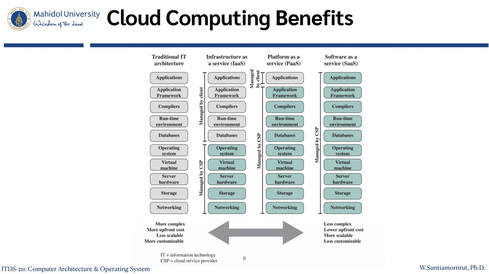
ภาพแสดง stack 10 ชั้น (Applications, Application Framework, Compilers, Run-time environment, Databases, Operating system, Virtual machine, Server hardware, Storage, Networking) ว่าชั้นไหน managed by client (สีขาว) และชั้นไหน managed by CSP (Cloud Service Provider, สีเขียว)
| ลูกค้าจัดการเอง | CSP จัดการให้ | |
|---|---|---|
| Traditional IT | ทั้งหมด | – |
| IaaS | Applications → Databases, OS | Virtual machine, Server hardware, Storage, Networking |
| PaaS | Applications, Application Framework | ที่เหลือทั้งหมด |
| SaaS | – | ทั้งหมด |
ลูกศรสองทาง: ฝั่ง Traditional IT = more complex, more upfront cost, less scalable, more customizable ↔ ฝั่ง SaaS = less complex, lower upfront cost, more scalable, less customizable
💡 เปรียบกับพิซซ่า: Traditional = ทำเองทุกอย่าง, IaaS = เช่าครัว, PaaS = สั่งแป้งกับเตามาแล้วแต่งหน้าเอง, SaaS = สั่งเดลิเวอรี่ (อุปมาเสริม)
5. Understanding Performance
ประสิทธิภาพของโปรแกรมขึ้นกับ 4 ส่วน:
| ส่วน | กำหนดอะไร |
|---|---|
| Algorithm | จำนวน operation ที่ต้องทำ |
| Programming language, compiler, architecture | จำนวน machine instruction ต่อ operation |
| Processor and memory system | คำสั่งถูกรันเร็วแค่ไหน |
| I/O system (รวม OS) | I/O operation เร็วแค่ไหน |
6. Eight Great Ideas in Computer Architecture ⭐
| # | Great Idea | ความหมาย (คำอธิบายเสริม) |
|---|---|---|
| 1 | Design for Moore's Law | ออกแบบโดยคิดว่าจำนวนทรานซิสเตอร์จะเพิ่มขึ้นเรื่อย ๆ (เดิมคือเพิ่มเท่าตัวทุก ~2 ปี) |
| 2 | Use abstraction to simplify design | ซ่อนรายละเอียดระดับล่างเพื่อให้ออกแบบง่าย |
| 3 | Make the common case fast | เร่งส่วนที่เกิดบ่อยที่สุดให้เร็ว คุ้มกว่าเร่งกรณีหายาก |
| 4 | Performance via parallelism | ทำหลายอย่างพร้อมกัน |
| 5 | Performance via pipelining | แบ่งงานเป็นขั้นแล้วทำต่อกันแบบสายพาน |
| 6 | Performance via prediction | เดาไว้ก่อนแล้วทำไปเลย ถ้าเดาถูกบ่อยจะเร็วขึ้น |
| 7 | Hierarchy of memories | memory เร็ว เล็ก แพงไว้ใกล้ CPU / ช้า ใหญ่ ถูกไว้ไกล |
| 8 | Dependability via redundancy | มีสำรองไว้ เพื่อให้ระบบยังทำงานได้เมื่อบางส่วนเสีย |
💡 สไลด์ใช้ไอคอนประกอบ: กราฟ (Moore's Law), ภาพวาดซ้อนชั้น (abstraction), รถสปอร์ต (common case fast), เครื่องบินหลายลำ (parallelism), ท่อ (pipelining), ลูกแก้ว (prediction), พีระมิด (hierarchy), รถพ่วงยางสำรอง (redundancy)
7. Below Your Program และ Levels of Program Code
7.1 Below Your Program (ชั้นซ้อนเป็นวงกลม)
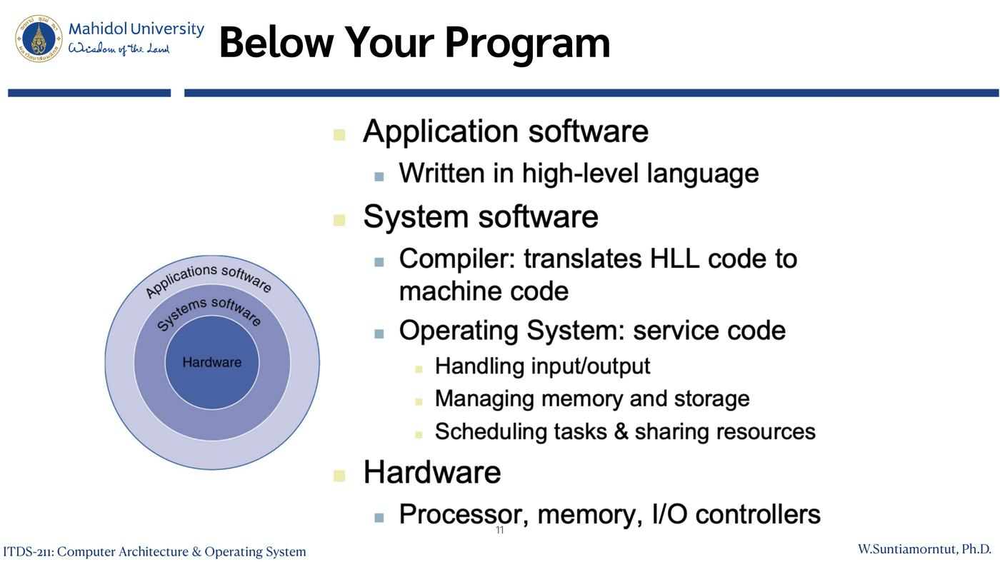
| ชั้น | ประกอบด้วย |
|---|---|
| Application software | เขียนด้วย ภาษาระดับสูง (high-level language) |
| System software | Compiler: แปลโค้ดภาษาระดับสูงเป็น machine code / Operating System: service code — จัดการ input/output, จัดการ memory และ storage, schedule งานและแบ่งทรัพยากร |
| Hardware | Processor, memory, I/O controllers |
7.2 Levels of Program Code
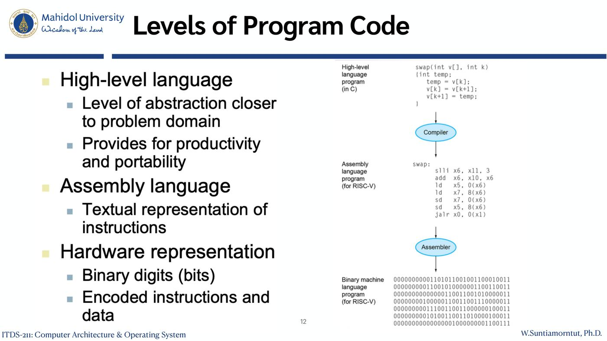
| ระดับ | ลักษณะ | ตัวอย่างในภาพ |
|---|---|---|
| High-level language | ใกล้กับ problem domain, ให้ productivity และ portability | ฟังก์ชัน swap(int v[], int k) ในภาษา C |
| ↓ Compiler | ||
| Assembly language | ข้อความแทนคำสั่ง (textual representation) | slli x6, x11, 3, add x6, x10, x6, ld x5, 0(x6) … jalr x0, 0(x1) (RISC-V) |
| ↓ Assembler | ||
| Hardware representation | เลขฐานสอง (bits), คำสั่งและข้อมูลที่ถูกเข้ารหัส | 00000000001101011001001100010011 … |
8. Components of Computers และ Inside the CPU
8.1 Components of Computers
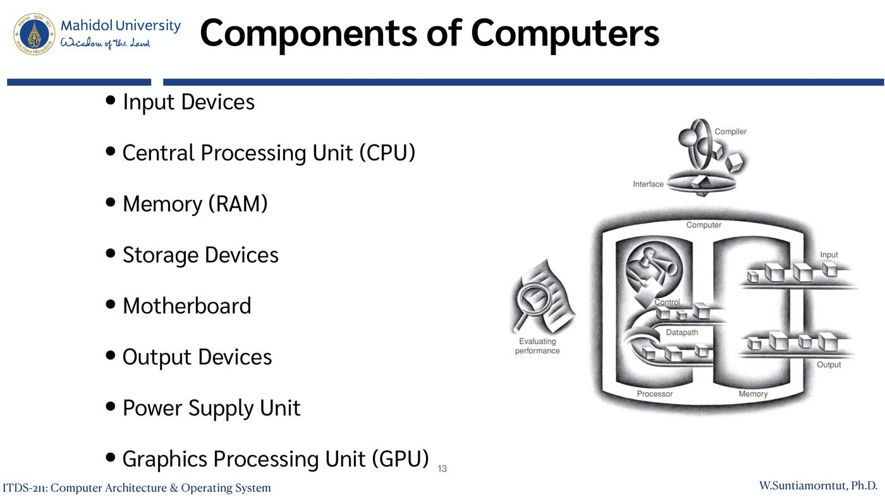
- Input Devices — อุปกรณ์รับข้อมูล (keyboard, mouse)
- Central Processing Unit (CPU) — สมองของเครื่อง ประมวลผลคำสั่ง
- Memory (RAM) — เก็บโปรแกรมและข้อมูลที่กำลังใช้
- Storage Devices — เก็บข้อมูลถาวร (HDD, SSD)
- Motherboard — แผงวงจรหลักที่เชื่อมทุกส่วน
- Output Devices — อุปกรณ์แสดงผล (จอ, ลำโพง)
- Power Supply Unit — จ่ายไฟ
- Graphics Processing Unit (GPU) — ประมวลผลกราฟิกและงานขนาน
ภาพประกอบแสดง Processor = Control + Datapath, Memory, Input, Output และ Compiler/Interface
8.2 Inside the Processor (CPU)
| ส่วน | หน้าที่ |
|---|---|
| Control Unit | ควบคุมการทำงาน ของ CPU |
| Arithmetic and Logic Unit (ALU) | ทำหน้าที่ ประมวลผลข้อมูล (คำนวณ เปรียบเทียบ) |
| Registers | ที่เก็บข้อมูลภายใน CPU (เร็วที่สุด) |
| CPU interconnection | การสื่อสาร ระหว่าง control unit, ALU และ registers |
9. Machine Cycle และ Registers
9.1 Machine Cycle: Fetch-decode-execute-store
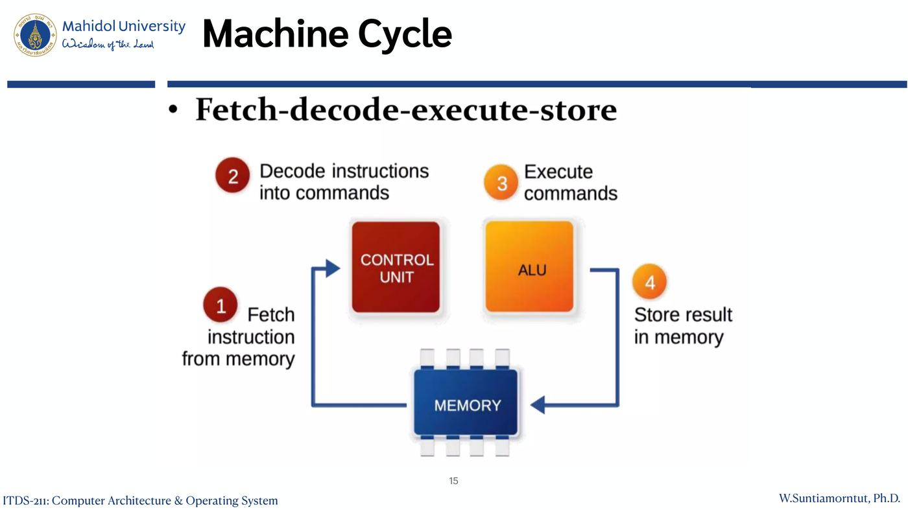
- Fetch — ดึงคำสั่งจาก memory
- Decode — Control Unit แปลคำสั่งเป็นคำสั่งงาน
- Execute — ALU ทำตามคำสั่ง
- Store — เก็บผลลัพธ์กลับลง memory
⚠️ Lecture 1 (OS) พูดถึง 3 ขั้น (fetch-decode-execute) บทนี้เพิ่มขั้น store เป็น 4 ขั้น
9.2 Registers in CPU
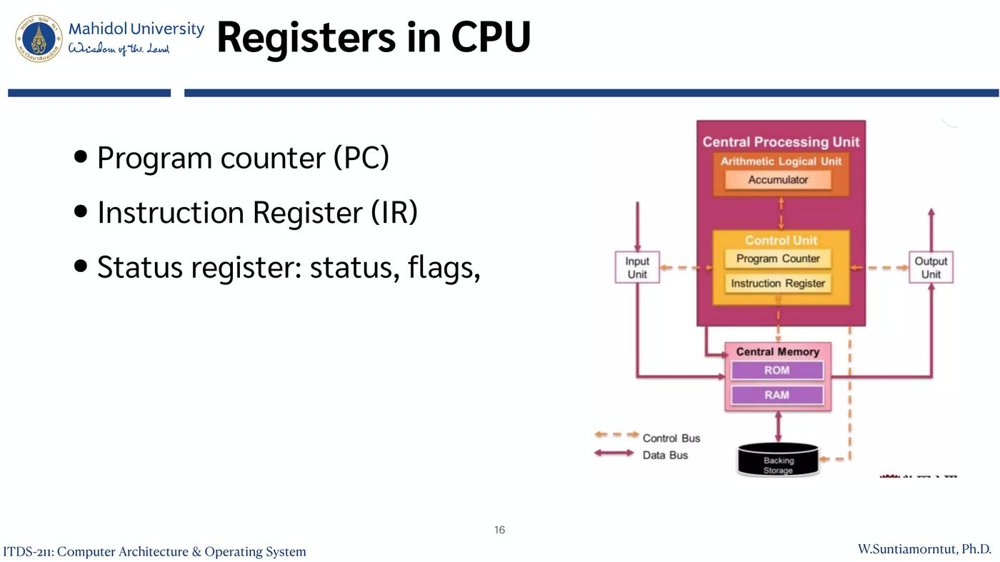
| Register | หน้าที่ (คำอธิบายเสริม) |
|---|---|
| Program Counter (PC) | เก็บ address ของคำสั่งถัดไป |
| Instruction Register (IR) | เก็บ คำสั่งที่กำลังรันอยู่ |
| Status register | เก็บ สถานะและ flags เช่น ผลเป็นศูนย์ ติดลบ มีตัวทด |
ภาพ: CPU มี Arithmetic Logical Unit (Accumulator) และ Control Unit (Program Counter, Instruction Register) เชื่อมกับ Central Memory (ROM, RAM), Input Unit, Output Unit และ Backing Storage ผ่าน Control Bus (เส้นประ) และ Data Bus (เส้นทึบ)
10. Cache Memory ⭐
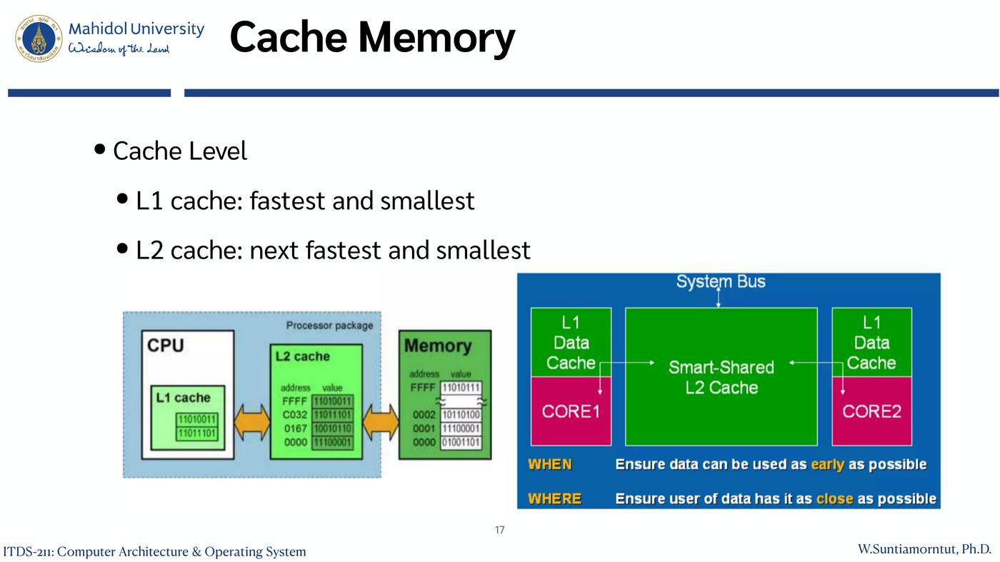
10.1 Cache Level
- L1 cache: เร็วที่สุดและเล็กที่สุด (อยู่ใน CPU core)
- L2 cache: เร็วและเล็กรองลงมา
ภาพขวา: CORE1 และ CORE2 ต่างมี L1 Data Cache ของตัวเอง และใช้ Smart-Shared L2 Cache ร่วมกัน ต่อกับ System Bus
- WHEN: Ensure data can be used as early as possible
- WHERE: Ensure user of data has it as close as possible
10.2 หลักการของ Cache
- หลายชั้นของ memory อยู่ ระหว่าง processor กับ main memory
- เล็กกว่าและเร็วกว่า main memory
- เร่งการเข้าถึง memory โดยเอาข้อมูลจาก main memory ที่ น่าจะถูกใช้ในอนาคตอันใกล้ มาวางใน cache
- ใช้ หลายระดับ ได้ประสิทธิภาพดีขึ้น โดย L1 ใกล้ core ที่สุด แล้ว L2, L3, … ไกลออกไปเรื่อย ๆ
💡 เหมือนโต๊ะทำงาน: L1 = ของบนโต๊ะ (หยิบเร็วสุดแต่วางได้น้อย), L2/L3 = ลิ้นชัก, main memory = ตู้เอกสาร, disk = โกดัง เอาของที่ใช้บ่อยมาไว้ใกล้มือ
11. Multi-core vs Multi-thread ⭐
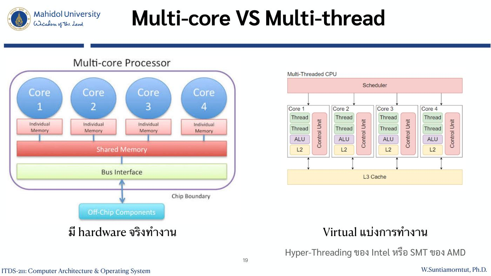
- Multi-core Processor: Core 1–4 แต่ละ core มี Individual Memory ของตัวเอง ใช้ Shared Memory และ Bus Interface ร่วมกัน ต่อ Off-Chip Components → มี hardware จริงทำงาน
- Multi-Threaded CPU: แต่ละ core (มี Thread, ALU, L2, Control Unit) แบ่งเป็นหลาย thread มี Scheduler ด้านบนและ L3 Cache ด้านล่าง → Virtual แบ่งการทำงาน
- เทคโนโลยีจริง: Hyper-Threading ของ Intel หรือ SMT ของ AMD
| Multi-core | Multi-thread |
|---|---|
| Hardware ทางกายภาพมีอยู่จริง | เสมือนจริง (เทคนิคแบ่งการทำงาน) |
| รับงานชิ้นใหญ่มาประมวลผลแยกกันแบบคู่ขนาน (parallel) | จัดการงานเบื้องหลังและแบ่งงานย่อยป้อนให้ core |
| Core = จำนวนเชฟทำอาหารในครัว | Thread = จำนวนแขนของเชฟแต่ละคน |
💡 CPU "4 cores 8 threads" = เชฟ 4 คน แต่ละคนมี 2 แขน ทำงานได้ 8 อย่างพร้อมกัน (แต่ 2 แขนของคนเดียวยังไม่เร็วเท่าเชฟ 2 คนจริง)
Simplified view of major elements of a multicore computer
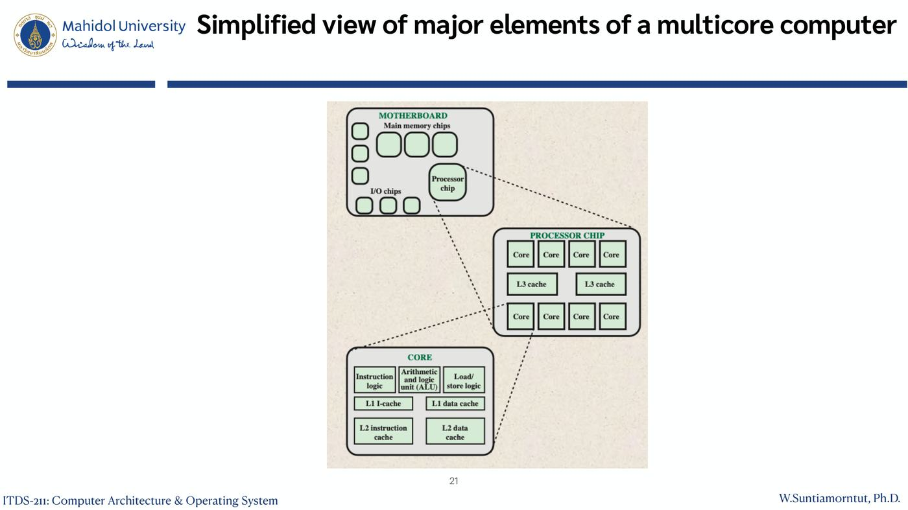
ซูมเป็น 3 ระดับ:
- MOTHERBOARD: Main memory chips, I/O chips, Processor chip
- PROCESSOR CHIP: หลาย Core และ L3 cache
- CORE: Instruction logic, Arithmetic and logic unit (ALU), Load/store logic, L1 I-cache (instruction), L1 data cache, L2 instruction cache, L2 data cache
12. ตัวอย่างฮาร์ดแวร์จริงและการผลิต IC
12.1 Motherboard with Two Intel Quad-Core Xeon Processors
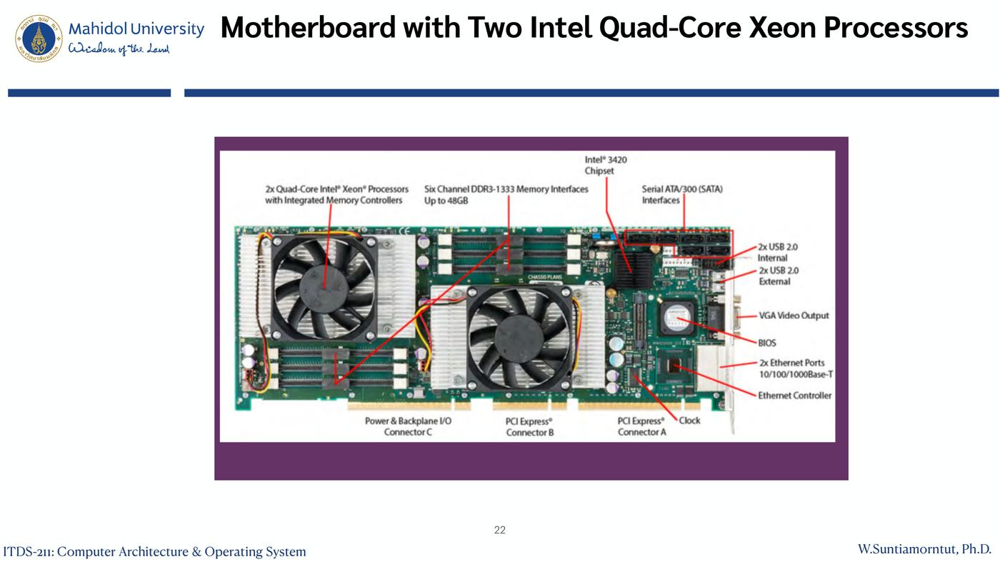
ส่วนที่ชี้ในภาพ: 2x Quad-Core Intel Xeon Processors with Integrated Memory Controllers, Six Channel DDR3-1333 Memory Interfaces (Up to 48GB), Intel 3420 Chipset, Serial ATA/300 (SATA) Interfaces, 2x USB 2.0 Internal, 2x USB 2.0 External, VGA Video Output, BIOS, 2x Ethernet Ports 10/100/1000Base-T, Ethernet Controller, Power & Backplane I/O Connector C, PCI Express Connector B, PCI Express Connector A, Clock
12.2 Inside the Processor: Apple A5
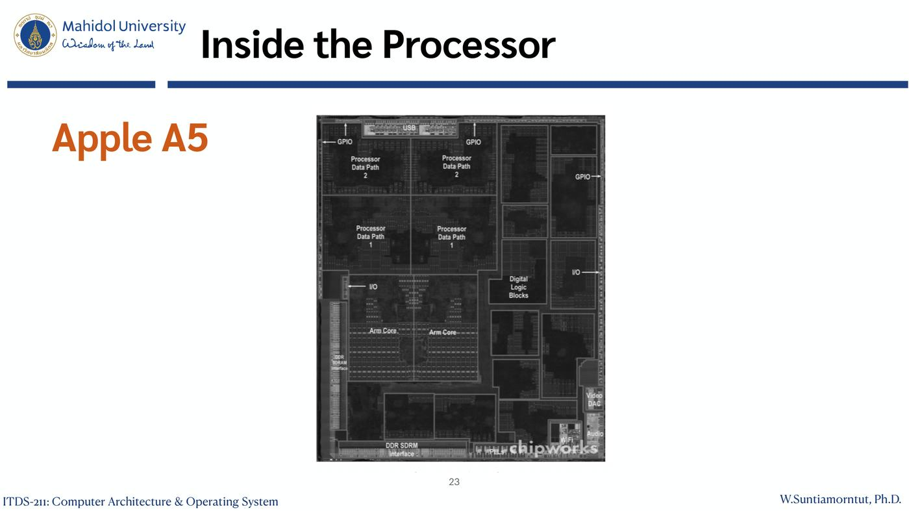
ภาพชิปจริง (chipworks) แบ่งพื้นที่เป็น Processor Data Path 1–2, ARM Cores, CPU/GPU blocks, Digital Logic Blocks, DDR SDRAM Interface, GPIO, I/O — แสดงว่า ชิปเดียวรวมหลายส่วน (System on Chip)
12.3 Manufacturing ICs
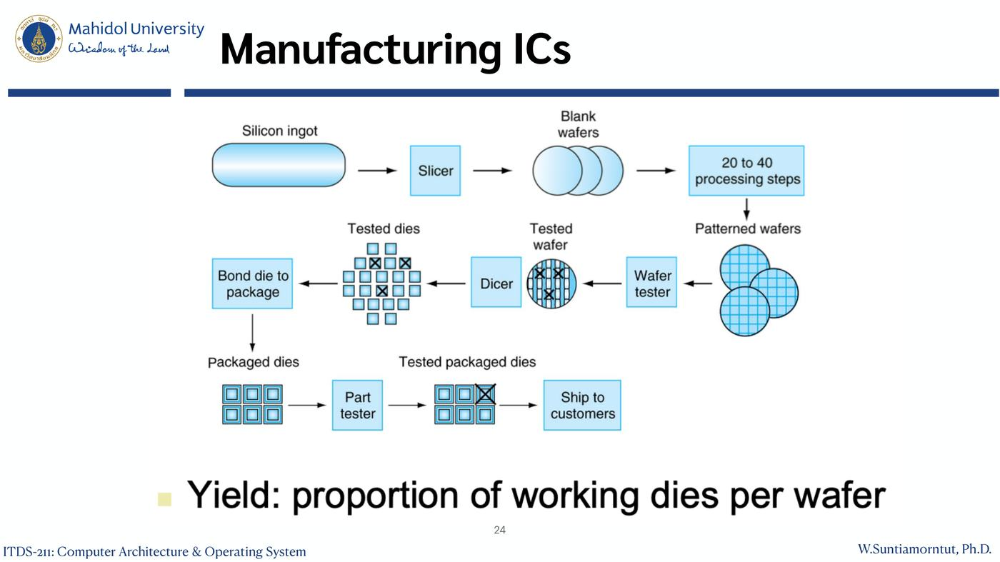
- Silicon ingot (แท่งซิลิคอน) → Slicer → Blank wafers
- 20 to 40 processing steps → Patterned wafers
- Wafer tester → Tested wafer
- Dicer (ตัดเป็นชิ้น) → Tested dies
- Bond die to package → Packaged dies
- Part tester → Tested packaged dies
- Ship to customers
- Yield: สัดส่วนของ die ที่ใช้งานได้ต่อ wafer
💡 ในภาพ die ที่มีกากบาท = die เสีย ถูกคัดทิ้ง ยิ่ง yield สูง ต้นทุนต่อชิปยิ่งต่ำ
12.4 Intel Core i7 Wafer
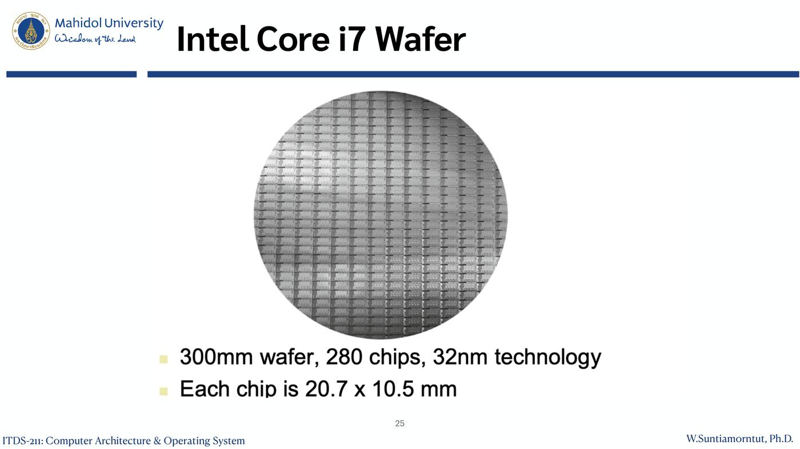
- wafer 300mm, 280 chips, เทคโนโลยี 32nm
- แต่ละชิปขนาด 20.7 x 10.5 mm
13. Single Processor Performance
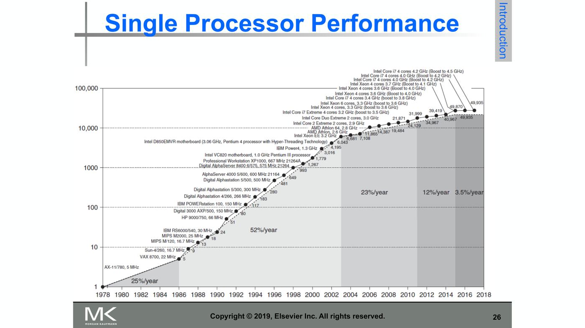
กราฟ log scale แสดงประสิทธิภาพ processor ตัวเดียว (จาก VAX-11/780 ปี 1978 ถึง Intel Core i7 ปี 2018) อัตราเติบโตแบ่งเป็นช่วง:
| ช่วง | อัตราเพิ่มต่อปี |
|---|---|
| ~1978–1986 | 25%/year |
| ~1986–2003 | 52%/year |
| ~2003–2011 | 23%/year |
| ~2011–2015 | 12%/year |
| ~2015–2018 | 3.5%/year |
💡 ทำไมโตช้าลง? หลังปี 2003 เพิ่มความเร็ว clock ต่อไม่ได้เพราะความร้อนและพลังงาน อุตสาหกรรมจึงหันไปใช้ multi-core / parallelism แทน (คำอธิบายเสริมตามตำรา Hennessy & Patterson)
14. RISC vs CISC Architecture ⭐
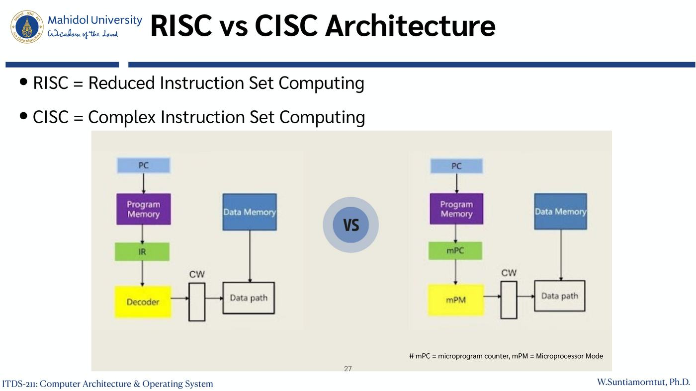
- RISC = Reduced Instruction Set Computing
- CISC = Complex Instruction Set Computing
ภาพเปรียบเทียบ
| RISC (ซ้าย) | CISC (ขวา) |
|---|---|
| PC → Program Memory → IR → Decoder → CW → Data path | PC → Program Memory → mPC → mPM → CW → Data path |
| คำสั่งถูก decode ตรง ๆ ด้วยวงจร | คำสั่งถูกแปลผ่าน microprogram |
(หมายเหตุในสไลด์: mPC = microprogram counter, mPM = Microprocessor Mode; CW = control word)
| RISC | CISC (ตารางเสริมจากความรู้ทั่วไป) | |
|---|---|---|
| ชุดคำสั่ง | น้อย เรียบง่าย ขนาดคงที่ | มาก ซับซ้อน ขนาดไม่คงที่ |
| การถอดรหัส | hardwired decoder | microprogram |
| ตัวอย่าง | ARM, RISC-V | Intel x86 |
15. Embedded Systems และ ARM
15.1 Embedded Systems
- การใช้อิเล็กทรอนิกส์และซอฟต์แวร์ภายในผลิตภัณฑ์
- มีคอมพิวเตอร์หลายพันล้านเครื่องผลิตทุกปี ฝังอยู่ในอุปกรณ์ที่ใหญ่กว่า
- อุปกรณ์ส่วนใหญ่ที่ใช้ไฟฟ้า มีระบบ embedded computing อยู่
- มักมี ความผูกพันแน่นกับสภาพแวดล้อม:
- Real-time constraints — ต้องตอบสนองทันเวลา
- ต้องจัดการหลายกิจกรรมพร้อมกัน ทำให้ข้อจำกัด real-time ซับซ้อนขึ้น
💡 เช่น ไมโครเวฟ เครื่องซักผ้า ระบบเบรก ABS ในรถยนต์ (ตัวอย่างเสริม)
15.2 Example of Embedded System Processor: ARM
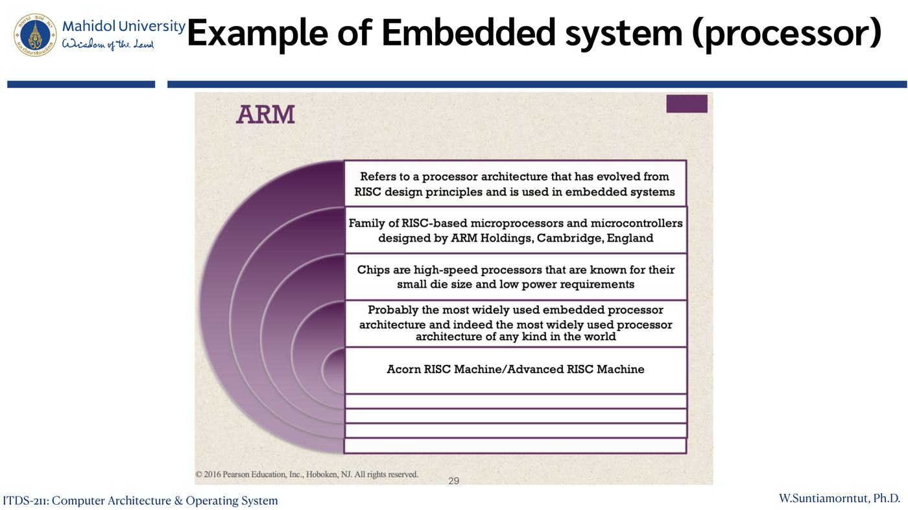
- หมายถึงสถาปัตยกรรม processor ที่พัฒนามาจากหลักการออกแบบ RISC และใช้ในระบบ embedded
- ตระกูล microprocessor และ microcontroller แบบ RISC ออกแบบโดย ARM Holdings, Cambridge, England
- ชิปเป็น processor ความเร็วสูง ที่ขึ้นชื่อเรื่อง die ขนาดเล็กและใช้พลังงานต่ำ
- น่าจะเป็นสถาปัตยกรรม embedded processor ที่ใช้มากที่สุด และเป็น processor ที่ใช้มากที่สุดในโลก
- ชื่อย่อจาก Acorn RISC Machine / Advanced RISC Machine
15.3 ARM Products
| ตระกูล | ตัวอย่าง |
|---|---|
| Cortex-A / Cortex-A50 | สำหรับงานประยุกต์ทั่วไป (เช่น สมาร์ทโฟน) (เสริม) |
| Cortex-R | สำหรับงาน real-time (เสริม) |
| Cortex-M | Cortex-M0, Cortex-M0+, Cortex-M3, Cortex-M4 (microcontroller) |
15.4 Microcontroller chip based on Cortex-M3
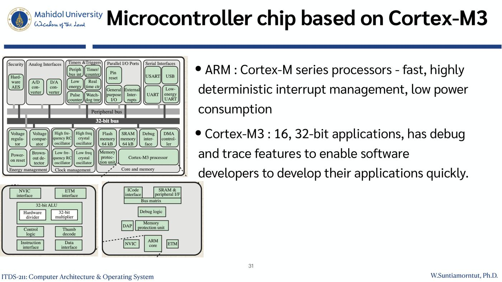
- ARM Cortex-M series: fast, interrupt management ที่คาดการณ์ได้แน่นอน (highly deterministic), ใช้พลังงานต่ำ
- Cortex-M3: สำหรับงาน 16, 32-bit, มี debug และ trace features ช่วยให้นักพัฒนาทำแอปได้เร็ว
- ภาพแสดงบล็อกภายในชิป: Security (AES), Analog Interfaces (A/D, D/A converters), Timers & Triggers, Parallel I/O Ports, Serial Interfaces (USART, USB), Peripheral bus, 32-bit bus, Voltage regulator, Flash memory 64 kB, SRAM memory 64 kB, Clock management, Energy management, Cortex-M3 processor (NVIC, ETM, 32-bit ALU, Hardware divider, Thumb decode, Memory protection unit, Debug logic)
16. Parallelism และ Flynn's Taxonomy ⭐
16.1 Parallelism
| กลุ่ม | ประเภท |
|---|---|
| Classes of parallelism in applications (ในตัวแอป) | Data-Level Parallelism (DLP) — ทำกับข้อมูลหลายชิ้นพร้อมกัน / Task-Level Parallelism (TLP) — แยกงานที่เป็นอิสระทำพร้อมกัน |
| Classes of architectural parallelism (ในฮาร์ดแวร์) | Instruction-Level Parallelism (ILP) (เช่น pipelining) / Vector architectures / GPUs / Thread-Level Parallelism / Request-Level Parallelism |
16.2 Flynn's Taxonomy
| ประเภท | ชื่อเต็ม | ตัวอย่าง / หมายเหตุ |
|---|---|---|
| SISD | Single instruction stream, single data stream | processor ตัวเดียวแบบดั้งเดิม |
| SIMD | Single instruction stream, multiple data streams | Vector architectures, Multimedia extensions, Graphics processor units |
| MISD | Multiple instruction streams, single data stream | ไม่มีเครื่องเชิงพาณิชย์ (No commercial implementation) |
| MIMD | Multiple instruction streams, multiple data streams | Tightly-coupled MIMD (เช่น multicore แชร์ memory), Loosely-coupled MIMD (เช่น cluster) |
💡 SIMD = คำสั่งเดียวทำกับข้อมูลหลายชุดพร้อมกัน เช่น ปรับความสว่างทุก pixel ของภาพในคราวเดียว จึงเหมาะกับ GPU (ตัวอย่างเสริม)
💡 จำ: ตัวที่ 1 = instruction, ตัวที่ 3 = data / S = single, M = multiple / MISD ไม่มีใช้เชิงพาณิชย์
17. System Level Architecture Patterns
| Pattern | ความหมาย |
|---|---|
| Monolithic | ระบบเดียวรวมทุกอย่าง |
| Client-server | แยกเป็นเครื่องที่ขอ (client) และเครื่องที่ให้บริการ (server) |
| Distributed systems | กระจายการคำนวณ ไปหลายเครื่องที่เชื่อมเครือข่ายกัน |
| Micro services | บริการย่อยแบบโมดูล deploy แยกกันได้อิสระ (เป็น software architecture pattern มากกว่า) |
18. Performance ⭐⭐
18.1 Relative Performance
- Performance = 1 / Execution Time (เวลายิ่งน้อย ประสิทธิภาพยิ่งสูง)
- "X เร็วกว่า Y n เท่า"
$$\frac{\text{Performance}_X}{\text{Performance}_Y} = \frac{\text{Execution time}_Y}{\text{Execution time}_X} = n$$
ตัวอย่าง: รันโปรแกรมบน A ใช้ 10s บน B ใช้ 15s
- Execution Time_B / Execution Time_A = 15s / 10s = 1.5
- A เร็วกว่า B 1.5 เท่า
⚠️ สังเกตว่า เวลาของตัวที่ช้ากว่าอยู่บนเศษ (กลับข้างกับ performance)
18.2 Measuring Execution Time
| Elapsed time | CPU time | |
|---|---|---|
| คืออะไร | เวลาตอบสนองรวม ทุกด้าน | เวลาที่ CPU ใช้ประมวลผลงานนั้นจริง |
| รวมอะไร | Processing, I/O, OS overhead, idle time | ไม่นับ เวลา I/O และเวลาที่แบ่งให้งานอื่น |
| ใช้บอก | ประสิทธิภาพของทั้งระบบ | ประกอบด้วย user CPU time + system CPU time |
| หมายเหตุ | โปรแกรมต่างกันได้รับผลจาก CPU และ system performance ต่างกัน |
18.3 Clock
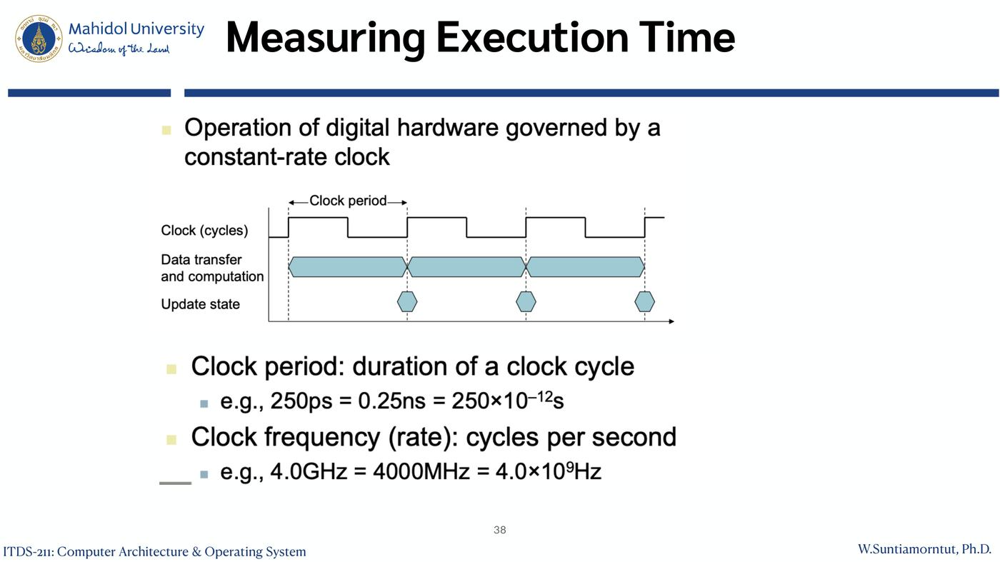
- การทำงานของฮาร์ดแวร์ดิจิทัลถูกควบคุมด้วย clock ที่มีจังหวะคงที่
- Clock period: ระยะเวลาของ 1 clock cycle — เช่น 250ps = 0.25ns = 250×10⁻¹²s
- Clock frequency (rate): จำนวน cycle ต่อวินาที — เช่น 4.0GHz = 4000MHz = 4.0×10⁹Hz
- Clock rate = 1 / Clock period (ความสัมพันธ์เสริม: 1/250ps = 4GHz)
18.4 CPU Time
$$\text{CPU Time} = \text{CPU Clock Cycles} \times \text{Clock Cycle Time} = \frac{\text{CPU Clock Cycles}}{\text{Clock Rate}}$$
ปรับปรุงประสิทธิภาพได้โดย:
- ลดจำนวน clock cycles
- เพิ่ม clock rate
- ⚠️ วิศวกรฮาร์ดแวร์มักต้องแลก (trade off) ระหว่าง clock rate กับจำนวน cycle — ทำ clock เร็วขึ้นมักทำให้ต้องใช้ cycle มากขึ้น
18.5 CPU Time Example ⭐
โจทย์:
- Computer A: clock 2GHz, CPU time 10s
- ออกแบบ Computer B: ต้องการ CPU time 6s; ทำ clock เร็วขึ้นได้ แต่ทำให้ clock cycles เพิ่มเป็น 1.2 เท่า
- Computer B ต้องมี clock rate เท่าใด?
วิธีทำ:
$$\text{Clock Rate}_B = \frac{\text{Clock Cycles}_B}{\text{CPU Time}_B} = \frac{1.2 \times \text{Clock Cycles}_A}{6s}$$
$$\text{Clock Cycles}_A = \text{CPU Time}_A \times \text{Clock Rate}_A = 10s \times 2GHz = 20 \times 10^9$$
$$\text{Clock Rate}_B = \frac{1.2 \times 20 \times 10^9}{6s} = \frac{24 \times 10^9}{6s} = \mathbf{4GHz}$$
💡 ลำดับคิด: (1) หาจำนวน cycle ของ A จากเวลา × rate (2) คูณ 1.2 ได้ cycle ของ B (3) หารด้วยเวลาที่ต้องการของ B
18.6 Instruction Count and CPI
$$\text{Clock Cycles} = \text{Instruction Count} \times \text{Cycles per Instruction}$$
$$\text{CPU Time} = \text{Instruction Count} \times \text{CPI} \times \text{Clock Cycle Time} = \frac{\text{Instruction Count} \times \text{CPI}}{\text{Clock Rate}}$$
- Instruction Count ของโปรแกรม: ถูกกำหนดโดย program, ISA และ compiler
- CPI (average cycles per instruction):
- ถูกกำหนดโดย CPU hardware
- ถ้าคำสั่งแต่ละแบบมี CPI ต่างกัน CPI เฉลี่ยขึ้นกับ instruction mix (สัดส่วนของคำสั่งแต่ละประเภทในโปรแกรม)
| ปัจจัย | ถูกกำหนดโดย |
|---|---|
| Instruction Count | program, ISA, compiler |
| CPI | CPU hardware (และ instruction mix) |
| Clock Cycle Time | hardware / เทคโนโลยี |
18.7 CPI Example ⭐
โจทย์:
- Computer A: Cycle Time = 250ps, CPI = 2.0
- Computer B: Cycle Time = 500ps, CPI = 1.2
- ISA เดียวกัน (instruction count เท่ากัน = I)
- ตัวไหนเร็วกว่า และเร็วกว่ากี่เท่า?
วิธีทำ:
$$\text{CPU Time}_A = I \times 2.0 \times 250ps = I \times 500ps$$
$$\text{CPU Time}_B = I \times 1.2 \times 500ps = I \times 600ps$$
$$\frac{\text{CPU Time}_B}{\text{CPU Time}_A} = \frac{I \times 600ps}{I \times 500ps} = \mathbf{1.2}$$
A เร็วกว่า B 1.2 เท่า
💡 แม้ A มี CPI สูงกว่า (2.0 > 1.2) แต่ clock เร็วกว่า 2 เท่า จึงชนะ แสดงว่า ต้องดูทั้ง 3 ปัจจัยรวมกัน ดูตัวใดตัวหนึ่งอย่างเดียวไม่ได้
⚠️ ISA เดียวกัน ทำให้ instruction count ตัดกันได้ ถ้าคนละ ISA ต้องรู้ instruction count ด้วย
19. คำศัพท์สำคัญ
| คำศัพท์ | ความหมาย | จำง่าย ๆ ว่า |
|---|---|---|
| Architecture | คุณลักษณะที่โปรแกรมเมอร์เห็น (instruction set, addressing modes, data types) | WHAT |
| Organization | หน่วยปฏิบัติการและการเชื่อมต่อที่ทำให้ architecture เกิดขึ้นจริง (cache, pipeline, bus width, clock) | HOW |
| ISA | Instruction Set Architecture | ชุดคำสั่ง |
| Microarchitecture | การออกแบบภายใน processor ที่ implement ISA | ไส้ใน CPU |
| Supercomputer / Embedded computer | ความสามารถสูงสุด / ซ่อนในระบบอื่น ข้อจำกัดเข้ม | ยักษ์ / ฝังตัว |
| SaaS / PaaS / IaaS | ซอฟต์แวร์ / แพลตฟอร์ม / โครงสร้างพื้นฐาน เป็นบริการ | ใช้แอป / รันแอปเรา / เช่า VM |
| CSP | Cloud Service Provider | ผู้ให้บริการ cloud |
| Eight Great Ideas | Moore's law, abstraction, common case fast, parallelism, pipelining, prediction, hierarchy, redundancy | 8 หลักคิด |
| Compiler / Assembler | แปล HLL → assembly / assembly → binary | ล่าม 2 ชั้น |
| Control Unit / ALU / Registers | ควบคุม / คำนวณ / เก็บข้อมูลใน CPU | สั่ง / คิด / จด |
| Machine cycle | fetch-decode-execute-store | 4 จังหวะ |
| PC / IR / Status register | address คำสั่งถัดไป / คำสั่งปัจจุบัน / flags | ที่คั่น / บรรทัดที่อ่าน / ผลตรวจ |
| Cache (L1, L2, L3) | memory เล็กเร็วระหว่าง CPU กับ main memory | ของบนโต๊ะ |
| Multi-core | หลาย core ทางกายภาพ | เชฟหลายคน |
| Multi-thread (Hyper-Threading, SMT) | แบ่งการทำงานเสมือนใน core | แขนของเชฟ |
| Wafer / Die / Yield | แผ่นซิลิคอน / ชิปแต่ละชิ้น / สัดส่วน die ที่ใช้ได้ | แผ่นแป้ง / คุกกี้ / คุกกี้ที่ไม่ไหม้ |
| RISC / CISC | ชุดคำสั่งลดลง / ซับซ้อน | ARM / x86 |
| ARM, Cortex-M3 | สถาปัตยกรรม RISC สำหรับ embedded, ใช้พลังงานต่ำ | ชิปมือถือ |
| DLP / TLP | parallelism ระดับข้อมูล / งาน | |
| ILP | Instruction-Level Parallelism | pipelining |
| SISD / SIMD / MISD / MIMD | Flynn's taxonomy | MISD ไม่มีใช้ |
| Performance | 1 / Execution Time | |
| Elapsed time vs CPU time | เวลารวมทุกอย่าง vs เวลาที่ CPU ทำงานนั้นจริง | นาฬิกาจับเวลา vs เวลาที่ลงมือ |
| Clock period / Clock rate | เวลาต่อ cycle / cycle ต่อวินาที | กลับกัน |
| CPI | Clock cycles Per Instruction (เฉลี่ย) | กี่จังหวะต่อคำสั่ง |
| Instruction mix | สัดส่วนของคำสั่งแต่ละชนิด | ส่วนผสม |
20. สรุปท้ายบท / จุดที่มักออกสอบ
เรื่องที่ต้องจำ
- Architecture (WHAT, โปรแกรมเมอร์เห็น) vs Organization (HOW, วิศวกรฮาร์ดแวร์)
- Real computer architecture = ISA + microarchitecture + hardware ภายใต้ cost, power, availability
- Cloud: SaaS / PaaS / IaaS; ยิ่งไปทาง SaaS ยิ่งง่าย ถูก scale ง่าย แต่ปรับแต่งได้น้อย
- Performance ขึ้นกับ: algorithm (จำนวน operation), language/compiler/architecture (จำนวน instruction), processor/memory (ความเร็วคำสั่ง), I/O + OS (ความเร็ว I/O)
- Eight Great Ideas ทั้ง 8 ข้อ
- Levels of code: HLL → (compiler) → assembly → (assembler) → binary
- CPU = Control Unit + ALU + Registers + interconnection; machine cycle 4 ขั้น
- Cache: L1 เร็วสุดเล็กสุดใกล้ core, L2, L3 ไกลออกไป
- Multi-core = hardware จริง (เชฟ), Multi-thread = virtual (แขน)
- Yield = working dies / wafer; Core i7 wafer: 300mm, 280 chips, 32nm, 20.7 × 10.5 mm
- Single processor performance: 25% → 52% → 23% → 12% → 3.5% ต่อปี
- ARM: RISC, low power, small die, ใช้มากที่สุด; Cortex-A/R/M
- Flynn: SISD, SIMD (vector, multimedia ext, GPU), MISD (ไม่มีเชิงพาณิชย์), MIMD (tightly/loosely coupled)
- สูตร: Performance = 1/time; CPU time = cycles × cycle time = cycles / rate = IC × CPI × cycle time
คู่ที่มักสับสน
| คู่ | ต่างกันที่ |
|---|---|
| Architecture vs Organization | สิ่งที่มองเห็น (what) vs วิธี implement (how) |
| Multi-core vs Multi-thread | core จริง vs แบ่งงานเสมือน |
| Elapsed time vs CPU time | รวม I/O, OS, idle vs เฉพาะเวลาประมวลผลงานนั้น |
| Clock period vs Clock rate | วินาทีต่อ cycle vs cycle ต่อวินาที |
| RISC vs CISC | คำสั่งน้อยง่าย decode ตรง vs คำสั่งซับซ้อนผ่าน microprogram |
| DLP vs TLP | แบ่งข้อมูล vs แบ่งงาน |
| Tightly vs Loosely coupled MIMD | แชร์ memory ใกล้ชิด vs เครื่องแยกเชื่อมเครือข่าย |
โจทย์คำนวณที่ต้องทำได้
- "X เร็วกว่า Y กี่เท่า" = time_Y / time_X (10s vs 15s → 1.5)
- หา clock rate ใหม่: cycles_A = time × rate → × ตัวคูณ → หารเวลาเป้าหมาย (2GHz, 10s, ×1.2, 6s → 4GHz)
- เทียบ CPI: time = I × CPI × cycle time แล้วหารกัน (250ps/2.0 vs 500ps/1.2 → A เร็วกว่า 1.2 เท่า)